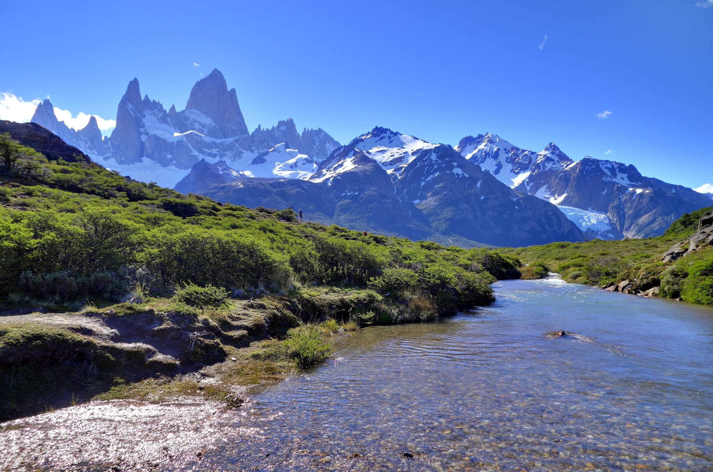
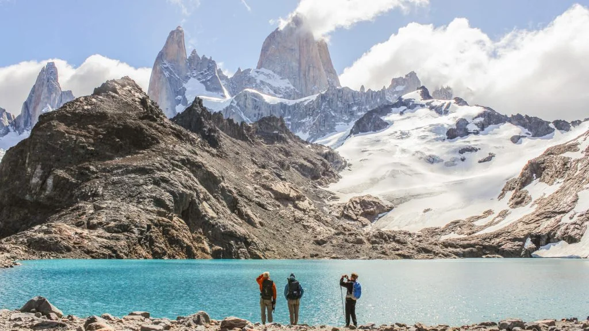
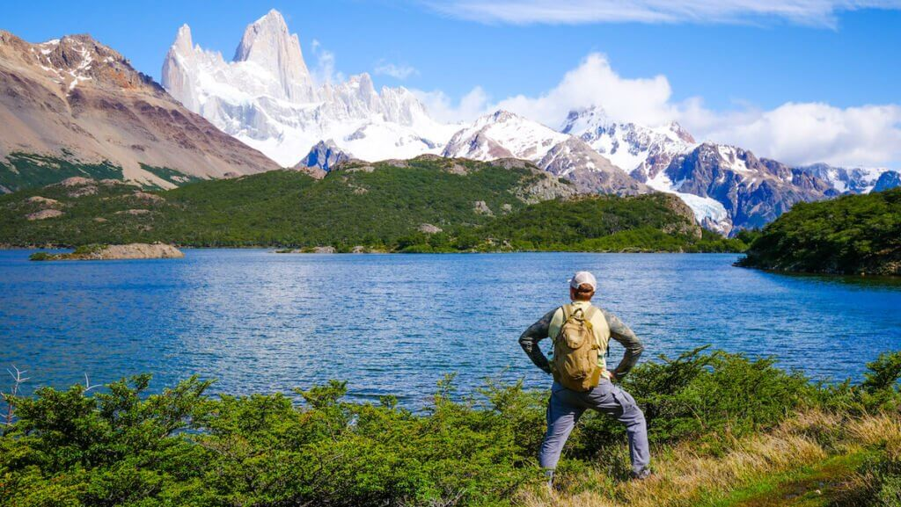

Excursiones en El Chaltén

Excursión al Fitz Roy
Una caminata desafiante hacia el icónico Monte Fitz Roy, con vistas espectaculares.
Ver más

Laguna de los Tres
Recorrido hacia la Laguna de los Tres, uno de los miradores más impresionantes.
Ver más
Glaciar Torre
Explora el Glaciar Torre y sus alrededores en una excursión de dificultad media.
Ver más

Laguna Capri
Caminata que te lleva en menos de dos horas hasta una laguna de aguas azules.
Ver más